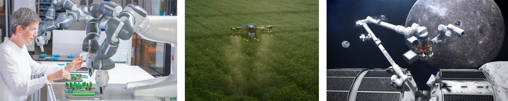

ECE 780 T03: Robot Dynamics and Control (Spring 2023)
Time and place
Thursday 13:00-14:20, E7 4043Friday 13:00-14:20, E7 4053
Office hours
Tuesday 15:00-17:00 Description
This course will introduce students to dynamic modeling and control techniques for robotic systems, and expose them to some cutting-edge research. The course will be divided into five modules, corresponding to the following topics:- Dynamics of manipulators
- Control of manipulators
- Kinematics of mobile robots
- Control of mobile robots
- Optimization-based robot control
Prerequisites
There are no formal prerequisites for the course. Some knowledge of linear algebra, rigid body dynamics, feedback control systems, and mathematical optimization can make life a bit easier.Reading
There is no required textbook. The following texts will be used for parts of the course.- Mark Spong, Seth Hutchinson, and Mathukumalli Vidyasagar, Robot modeling and control, John Wiley & Sons, 2020
- Bruno Siciliano, Lorenzo Sciavicco, Luigi Villani, and Giuseppe Oriolo, Robotics. Modelling, planning and control, Springer, 2009
- Stephen Boyd and Lieven Vandenberghe, Convex optimization, Cambridge University Press, 2004
- Magnus Egerstedt, Robot Ecology: Constraint-Based Design for Long-Duration Autonomy, Princeton University Press, 2021
Delivarables and grading
- Homeworks
- 4 homeworks
- 15% each
- Project
- Midterm project report: 10%
- Final project report: 20%
- Project code: 10%
Project details
The project will consist of a mobile manipulation task using the DJI RoboMaster EP programmed in Python. The deliverables will be three:- A midterm report, in the form a PDF document of maximum 3 pages, describing the progress made and the results obtained so far
- A final report, in the form of a PDF document of maximum 6 pages,
structured as follows:
- Section I: Proposed approach
- Section II: Results
- Section III: Discussion
- The code developed to complete the project
Project details (Alternative for MASc students)
The project will consist of the solution to a problem in the student's research area using the techniques covered during the course. The deliverables will be four:- A proposal, in the form of a 1-page PDF document, structured as follows:
- Section I: Problem description
- Section II: Novelty and/or impact
- Section III: How robot dynamics and control techniques play a key role
- Section IV: Technical challenges
- Section V: Metric for success
- Section VI: Timeline
- A midterm report, in the form a PDF document of maximum 3 pages, describing the progress made and the results obtained so far
- A final report, in the form of a PDF document of maximum 6 pages, structured as follows:
- Section I: Introduction
- Section II: Literature review
- Section III: Materials and methods
- Section IV: Results
- Section V: Discussion
- The code developed to complete the project
Audit policy
Either the homeworks or the project must be completed to audit the course.Policy on Academic Integrity
Academic Integrity To maintain a culture of academic integrity, members of the University of Waterloo are expected to promote honesty, trust, fairness, respect and responsibility. A student is expected to know what constitutes academic integrity, to avoid committing academic offences, and to take responsibility for their actions. A student who is unsure whether an action constitutes an offence, or who needs help in learning how to avoid offences (e.g., plagiarism, cheating) or about “rules” for group work/collaboration should seek guidance from course instructor, academic advisor, or Graduate Associate Dean. When misconduct has been found to have occurred, disciplinary penalties will be imposed under Policy 71 - Student Discipline. For information on categories of offenses and types of penalties, students should refer to Policy 71 - Student Discipline, \url{https://uwaterloo.ca/secretariat/policies-procedures-guidelines/policy-71}.Grievance A student who believes that a decision affecting some aspect of their University life has been unfair or unreasonable may have grounds for initiating a grievance. Read Policy 70 - Student Petitions and Grievances, Section 4, \url{https://uwaterloo.ca/secretariat/policies-procedures-guidelines/policy-70}.
Discipline A student is expected to know what constitutes academic integrity (\url{https://uwaterloo.ca/academic-integrity}) to avoid committing an academic offence, and to take responsibility for his/her actions. A student who is unsure whether an action constitutes an offence, or who needs help in learning how to avoid offences (e.g., plagiarism, cheating) or about ``rules'' for group work/collaboration should seek guidance from the course instructor, academic advisor, or the undergraduate Associate Dean.
Appeals A student may appeal the finding and/or penalty in a decision made under Policy 70 - Student Petitions and Grievances (other than regarding a petition) or Policy 71 - Student Discipline if a ground for an appeal can be established. Read Policy 72 - Student Appeals, \url{https://uwaterloo.ca/secretariat/policies-procedures-guidelines/policy-72}.
Note for students with disabilities The Office for persons with Disabilities (OPD), located in Needles Hall, Room 1132, collaborates with all academic departments to arrange appropriate accommodations for students with disabilities without compromising the academic integrity of the curriculum. If you require academic accommodations to lessen the impact of your disability, please register with the OPD at the beginning of each academic term.
Academic Integrity Office (UW) https://uwaterloo.ca/academic-integrity/.
Schedule
| Date | Subject | Optional reading | HW/project due |
|---|---|---|---|
| DYNAMICS OF MANIPULATORS | |||
| May 11 | Rigid body transformations | 2 [1], 2 [2] | |
| May 12 | Direct kinematics | 4 [1], 3 [2] | |
| May 18 | Differential kinematics | 3 [1], 2 [2] | |
| May 19 | Inverse kinematics | 5 [1], 3 [2] | |
| May 25 | Lagrange formulation | 6 [1], 7 [2] | |
| May 26 | Dynamics model of manipulators | 6 [1], 7 [2] | HW1 |
| CONTROL OF MANIPULATORS | |||
| Jun 1 | Decentralized control | 8 [1], 8 [2] | Project groups/proposal |
| Jun 2 | Centralized control | 9 [1], 8 [2] | |
| Jun 8 | Operational space control | 9 [1], 8 [2] | |
| Jun 9 | Impedance and admittance control | 9 [1], 8 [2] | HW2 |
| KINEMATICS OF MOBILE ROBOTS | |||
| Jun 15 | Kinematic constraints | 14 [1], 11 [2] | |
| Jun 16 | Kinematic model | 14 [1], 11 [2] | |
| Jun 22 | Dynamic model | 14 [1], 11 [2] | |
| Jun 23 | Controllability | 14 [1], 11 [2] | HW3 |
| CONTROL OF MOBILE ROBOTS | |||
| Jun 29 | Control of driftless systems | 14 [1], 11 [2] | |
| Jun 30 | Control of driftless systems | 14 [1], 11 [2] | Midterm project report |
| Jul 6 | Differential flatness | 14 [1], 11 [2] | |
| Jul 7 | Control of differentially flat systems | 14 [1], 11 [2] | HW4 |
| OPTIMIZATION-BASED ROBOT CONTROL | |||
| Jul 13 | Recap of mathematical optimization | 1 [3], lecture notes | |
| Jul 14 | Constrained convex optimization | 4, 5 [3], lecture notes | |
| Jul 20 | Stability and control Lyapunov functions | 4 [4], lecture notes | |
| Jul 21 | Invariance and control barrier functions | 4 [4], lecture notes | |
| Jul 27 | Combining stability and invariance tasks | 4 [4], lecture notes | |
| Jul 28 | Research challenges and opportunities | Final project report |